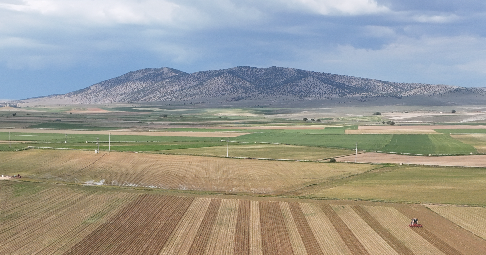
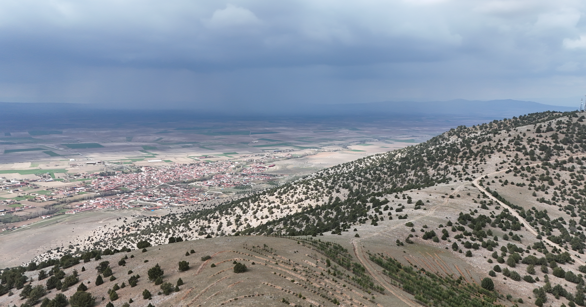
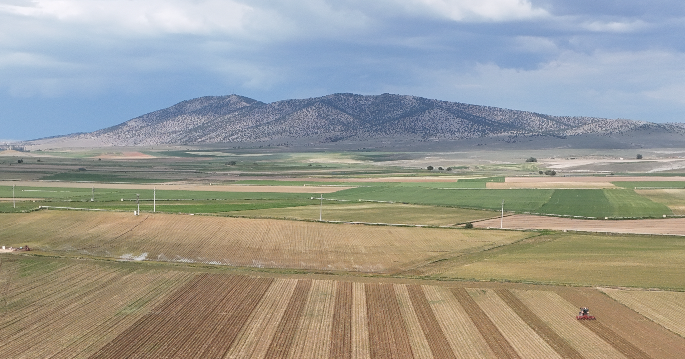
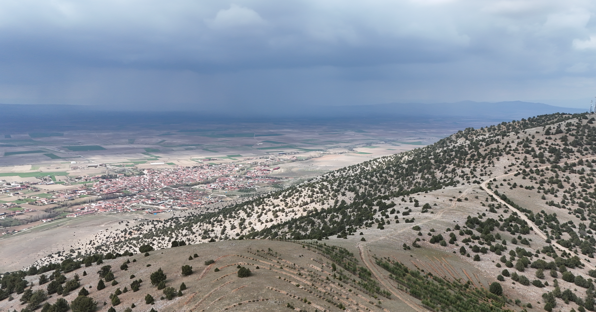

Doğançayır, Türkiye'nin Eskişehir ili, Seyitgazi ilçesine bağlı bir mahalledir. Nüfusu 774’tür (2022). 2013’te belde statüsünden mahalleye dönüşmüştür. Eski adı Arapören.
Konum
Eskişehir’e ~50 km, Seyitgazi’ye 17 km. Eskişehir–Ankara yolu Hamidiye kavşağına 10 km.
Coğrafya
Yerleşim, Kırkkız Dağı’nın eteğinde; içinden Seydisuyu geçer, iki köprü ile yakalar bağlanır. Çatıören Barajı sonrası geçiş kolaylaşmıştır.
Ekonomi
Ağırlıkla tarım ve hayvancılık. (Mısır,Şeker pancarı,çim,yulaf, ayçiçeği, yonca.)
Kültür
Alevi ağırlıklı yerleşim; Sünni kökenli sakinler de vardır. 3 Haziran Nâzım Hikmet Anması ile bilinir.
Tarihçe
Yaslandığı kırkkız dağı, kütahya eskişehir savaşının son noktası ve Sakarya Savaşı sonrasında Afyon - Eskişehir hattına çekilen yunan birliklerinin kuzeydeki direnek noktası olmuştur. Büyük Taarruz'a kadar bir yıl boyunca halka yoğun şekilde eziyet edilmiş, dağın ormanları yakılmıştır.


 


